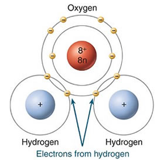

Kripke’s argument against identity-theory
Mon., Feb. 24
This class session covers Saul Kripke’s argument against identity-theory about pain. Having argued that because scientific
identities involve so-called ‘rigid designators’ they are therefore necessary a posteriori rather than being
contingent, Kripke next argues that the apparent contingency of psychophysical relations (e.g., between pain and
C-fibers firing) cannot be explained away in terms of misdescribed possibilities. A scenario that seems to involve water
without H2O can be redescribed as one involving not water, but ‘watery stuff’ that fits the descriptions
we associate with water. Likewise with a scenario that seems to involve heat without molecular motion. But because the way pain
feels is essential to pain, a scenario that seems to involve pain really does involve pain. We are left with no
way to deny the contingency, which means identity-theory is in trouble.
Key Concepts: Rigid Designator, Necessary A Posteriori
Readings:
Kripke, “Naming and Necessity” (excerpt; Textbook ch. 32)
Class Notes:
Other Resources:
Stanford Encyclopedia of Philosophy
Internet Encyclopedia of Philosophy